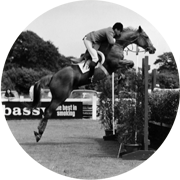
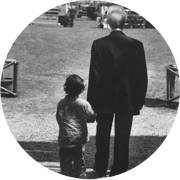

U n C a v a l i e r e i n A z i e n d a,
U n S u c c e s s o n e l l ' E q u i t a z i o n e,
U n P a d r e d i F a m i g l i a
A z i e n d a
Orlandi è un gruppo multisettoriale, un universo di prodotti e di idee dove anche il più piccolo dettaglio resta importante: questo è il segreto del successo Orlandi nel mondo.

E q u i t a z i o n e
Uno dei Cavalieri che ha portato il Salto Ostacoli Azzuro sui campi di gara di tutto il mondo, vincendo la medaglia di bronzo a squadre alle Olimpiadi del 1972 a Monaco, insieme a Graziano Mancinelli ed i Fratelli D’Inzeo.

F a m i g l i a
Il rapporto con la sua famiglia è l’esempio lampante di un legame che da oltre tre generazioni è sempre più forte.